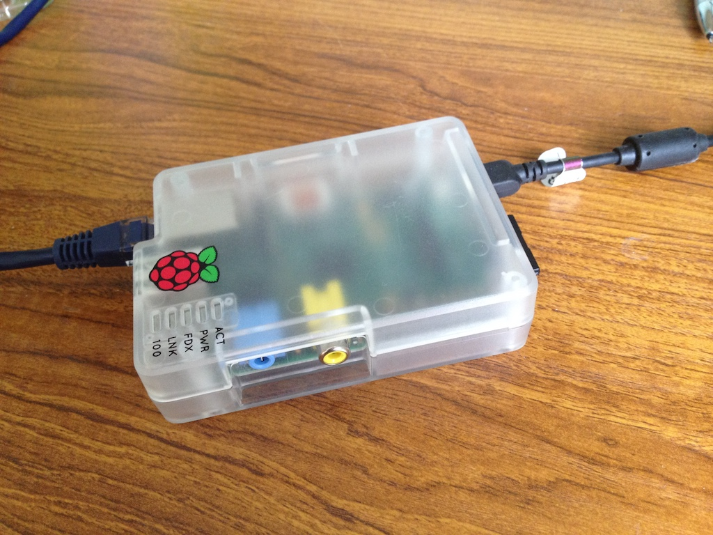
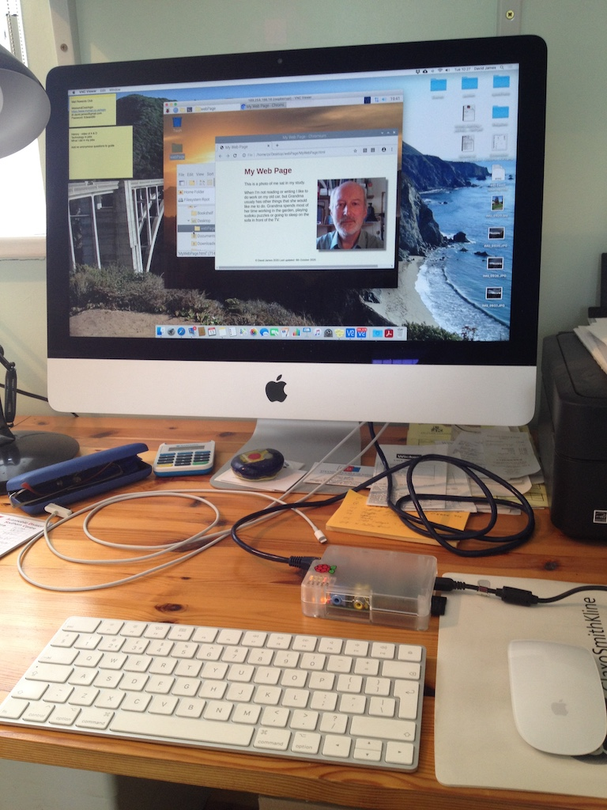
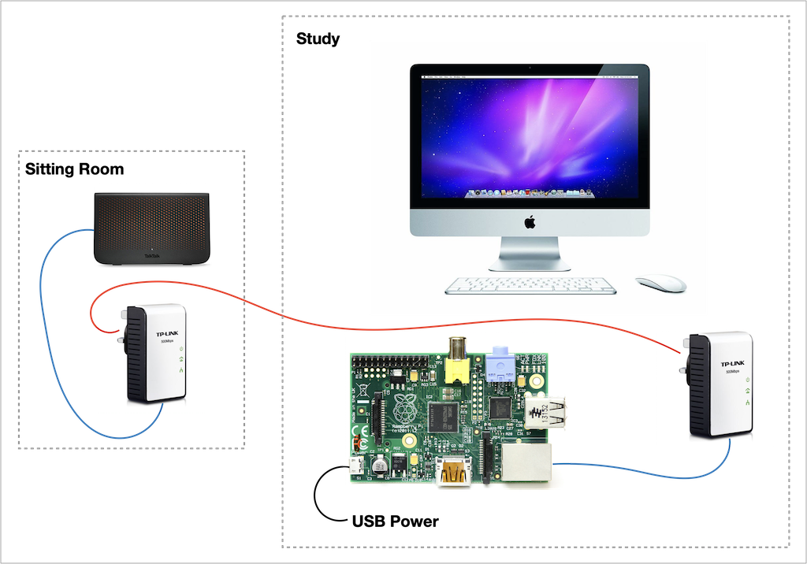
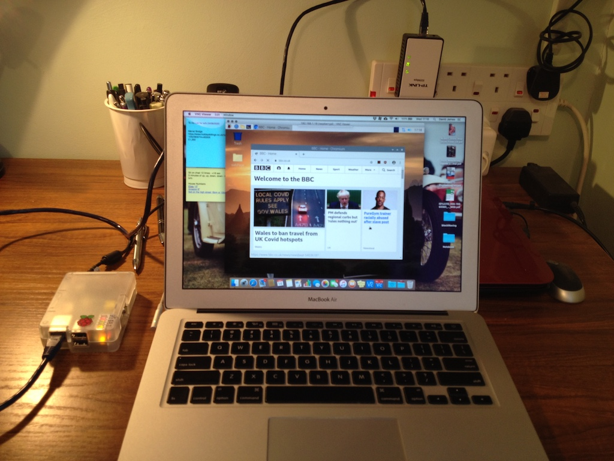

In 2012 I bought a Rasperry Pi 1B and a case to put it in. It has a 700 MHz CPU and 512 MB of RAM. The latest version of the Pi (version 4) has a 1.5 GHz CPU and 1, 2 or 4 GB of Ram, so my Pi is not very powerful. The Pi 4 also has bluetooth and wi-fi interfaces and more USB ports. However, my interest is really in the principles, rather than the practicality.
In October 2020 Austin asked about the size of the first computers that I programmed. So I thought I would also show him the smallest. Although an Arduino is smaller, I think of those as micro-controllers, rather than as computers.
These notes document my endeavours. Things were slightly complicated beacuse the Pi uses a memory card (I'd bought two 16 GB cards when I bought the Pi), but it is only my MacBook Air that has a card reader. But the Air does not have an ethernet port, which is needed to connect to the Pi. So I did some operations on the Air and some on the iMac, which has an ethernet port. The Pi has both an ethernet port and a small USB port that is used to provide power.
The other main problem was that I don't have a screen and keyboard that I can plug into the Pi (via USB) and so I needed to set up the Pi in what is known as a 'headless' mode. I can then use VNC (Virtual Network Computing) to display the Pi's desktop on another computer and use that computer's keyboard and mouse. VNC needs a server on the Pi and a viewer on the iMac or Air.
So this is what I did.
So now I had this. I found that the VNC Viewer also had a file transfer facility. So I copied the example html files, that I had given to Rowan and Austin, to the Pi. You can see that displayed in the Pi's browser window.
I had expected to need to start the VNC server on the Pi each time I started it, but when I restarted the Pi the server was running.
The only remaining problem was that the Pi had no access to the internet.
To achieve that I had to connect the Pi to the router, which is in the sitting room. Luckily I still have the tk-link modules that Brandon left behind. These modules plug into power sockets and essentially join two ethernet cables. So I plugged one into a socket in the sitting room and connected a cable to the router. The other tk-link module was plugged into a socket in the study, with the unit connected to the Pi. The red line on the diagram is the house electric wiring.
I installed VNC Viewer on the MacBook Air, connected it to the Pi by entering its IP address and the Pi's desktop appeared on the Air. The Pi's browser was then able to open the BBC web site, even if it was very slow. So I could then control the Pi from either the iMac or the Air, with the latter anywhere in range of the wi-fi.
© David James 2020 Last updated: 18th October 2020